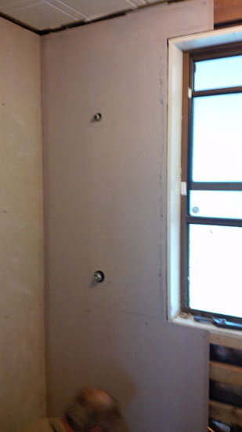

Our Bathroom Renovations
It all started with tiles, loose tiles coming off of the floor in the bathroom and laundry that then became an entire room renovation.
It all started with tiles, loose tiles coming off of the floor in the bathroom and laundry that then became an entire room renovation.
The tiles in the bathroom and laundry of our house had been loose for a while, more so in the bathroom and more kept coming off. The cats could pick them up and play with them! My housemate Damien got us a quote to replace the tiles with vinyl, I picked up some samples and one day during the weekend we picked one we liked that we felt fit both rooms since they have didn’t coloured walls. The company we went through was going to use the same vinyl for both rooms.
After I payed the deposit for the work, Damien went to work pulling the tiles up, it was during this time that the project took a detour. When he took off the tiles by the door he discovered that the floorboards underneath had become rotten, it was soon after when we found out that the rot had also been under the bath and in the walls that we would need to redo the entire bathroom. We had booked to have the floors replaced shortly after this but had to ask the flooring company to postpone the appointment due to the work being done in the bathroom, I was told they weren’t too pleased.
We asked my dad for help with the project and being the awesome dad that he is, he agreed. The first thing to be done was to strip the bathroom bare, Damien and my dad pulled out the bath, sink, vanity unit and medicine cabinet along with the walls and floorboards. I went to the hardware store Bunnings Warehouse one day with Damien and we ordered the chipboard flooring we needed and the new shower that was going to replace the bath/shower unit we originally had. We went to the tile company National Tiles to purchase the new tiles that Damien was going to put up when the new walls were put up. We purchased square white tiles with a slight texture to them and a natural stone strip to work as a feature.
After everything was taken out, we started replacing what had been taken out, starting with the floorboard which we replace with large sheets of a chipboard called yellowtongue. Most of this was actually done by my dad and their was a fair bit of prep work required before the board were put in place. When they were in place a hole needed to cut for the drain of the new shower base and it was discovered that a support beam was in the way. With the house being fifty years old the beam was incredibly dry a chainsaw was need to cut out the piece to let the drain sit in showerbase.
The next step was to change the plumbing to suit the new shower and to remove the pipes for the for the bath that would no longer be there. We bought a new tap for the shower, one of those single handle taps that combine both valves into one and Damien got a new sink for cheap from the local fire brigade where he volunteers. When we went to get new ends to attach the new tap to the existing pipe we found out that the piping in the house was a non-standard thickness. I ended up buying new copper piping to accomodate the new tap and the new rain shower head that Damien says gave him the best shower he’s ever had. Extra pipe was purchased for the pipe between the shower and where the sink was.
With the piping out of the way we moved onto the walls, putting up the cement sheeting we had already ordered and some extra that was ordered. When the work was being done, dad cut them to size and had some fun putting them in place, with at least one needing a slot cut for the shower base. He needed to make holes for the pipes to come through and pad out the walls the shower was against so the tiles that would be put up could cover the base. A hole was cut for the power point that used to exist on the old wall to remain and extra cabling was removed to a never used wall mounted light. Small gaps and holes were filled with silicon sealant and small pieces of cement sheeting and room was left for the cornus around the wall at the ceiling.
When the walls and floor had been sanded, cleaned and holes filled, Damien painted on water proofing onto the walls where the shower and sink were. I then gave the ceiling a coat of white mold resistant paint that took it from a speckled bue colour to a pure white but the first single coat I used just wasn’t enough to hide the red ring that had been drawn into the ceiling when Damien was installing the vents for the central heater we had installed.
To be continued.